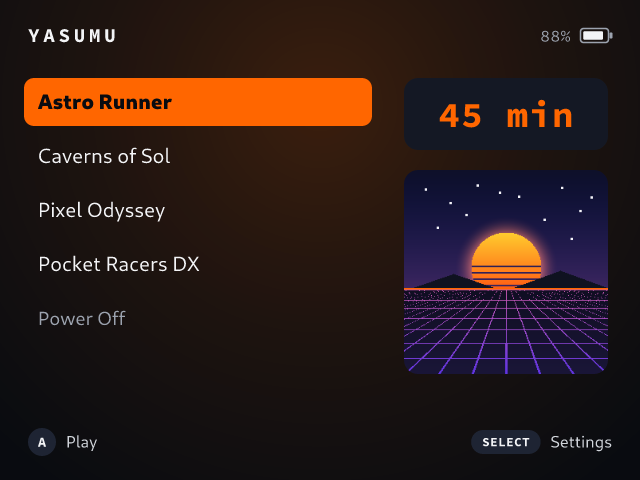
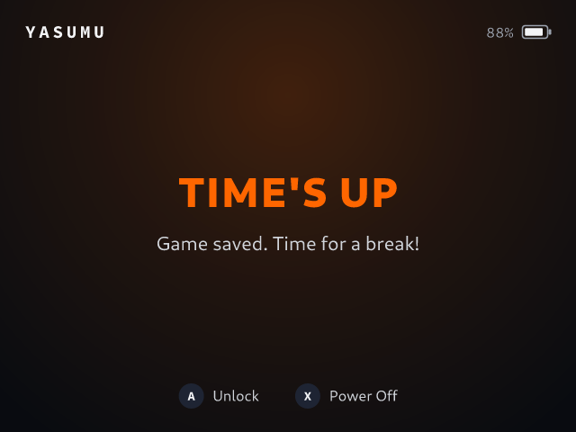
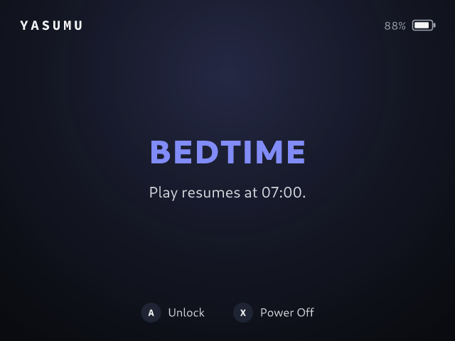
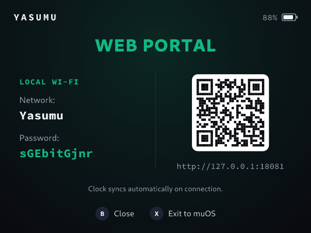
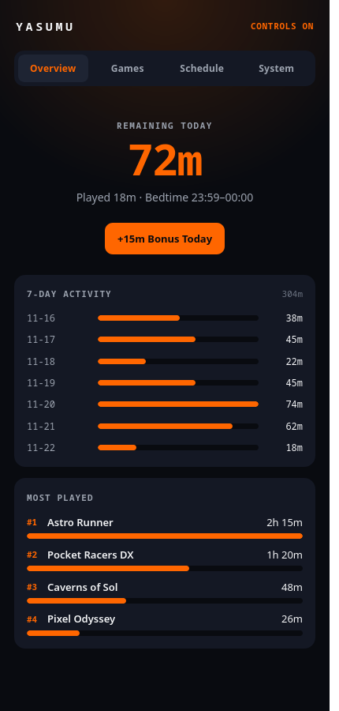
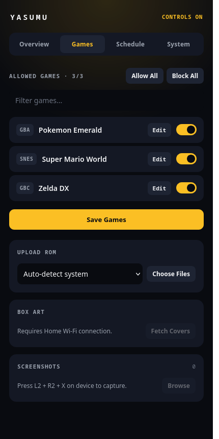
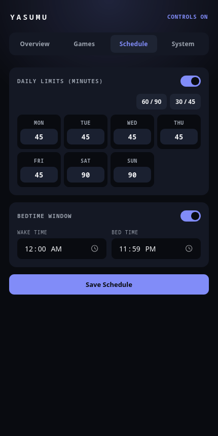

Minimalist launcher with Switch-style parental controls for retro emulation handhelds.

Configurable quiet bedtime window and per-day usage limits. 5m/1m warnings with on screen message and audio cue. Auto saves on exit.
PIN-gated portal over Home WiFi or offline hotspot with QR codes. Consult usage stats and manage everything from there.
Allowlist games, upload ROMs, fetch box art, browse and export screenshots, all without removing the SD card.
Reversible 1 click install, six languages supported (EN, FR, DE, ES, JP, CN). HMAC-signed state, and RTC rollback protection.






yasumuOS.muxapp to ARCHIVE/ on your SD card.Built for 640×480 Wi-Fi Allwinner H700 handhelds (RG35XXSP, RG35XX Plus/H, RG40XX H/V — tested on RG35XXSP). First boot opens the Web Portal automatically.
Restores the original muOS frontend and boot splash, removes yasumuOS, and reboots automatically. ROMs, saves, and box art stay intact.